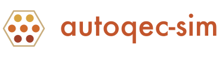

autoqec-sim¶

Evaluation of stabilizer codes under device noise, and search for codes, encoders, and syndrome-extraction schedules that score well under it.


What is autoqec-sim?¶
autoqec-sim evaluates stabilizer codes and their circuits under device noise, and searches for codes, encoders, and syndrome-extraction schedules that score well under it.
The evaluation layer scores a code three ways: the undetected single-fault mass of its encoding circuit under a device noise profile with every parameter sourced, a multi-round memory experiment with a decoder, and the exact distance and weight enumerators that verify any claim independently of the objective. The search layer runs on a batched Aaronson-Gottesman tableau that holds thousands of encoding circuits as one array and advances them one Clifford gate per step on a chosen connectivity graph. PPO, with an optional lattice-equivariant policy, and an evolutionary search build encoders gate by gate; a schedule synthesizer assigns the CX layers of a fixed code's syndrome-extraction circuit against the exact circuit-level fault distance.
The gate-by-gate discovery mode follows 1, whose code, QDX, introduced it and has reached larger codes than this package has. autoqec-sim rediscovers [[5,1,3]], Steane, Shor, and the rotated surface code on every lattice tested and has found noise-adapted non-CSS codes up to 16 qubits, but no new code above that; Experiments records where it stops. Its schedule synthesizer raised the fault distance of the [[49,13,4]] circuit on the qldpc-challenge board from 2 to 3. For code design at larger sizes, the SAT formulation of 2 designs codes with up to 100 qubits; the evaluation and schedule tools here take such codes as input.
The numpy engine on the CPU is the reference. The same kernels and rewards run on CUDA through the torch backend, with two opt-in fused CUDA kernels for the gate updates and the parity masks.
Quick Example¶
Install with pip install git+https://github.com/unitaryfoundation/autoqec-sim,
then score three known codes under the IonQ Forte preset:
from autoqec_sim import known_codes
from autoqec_sim.memory_objective import MemoryObjective
from autoqec_sim.noise import presets
# A three-round memory experiment under the IonQ Forte preset at a quarter of
# its measured rates, scored by the low-weight maximum-likelihood proxy.
objective = MemoryObjective(presets.forte("sequential"), scale=0.25, rounds=3)
for name in ("five_qubit", "steane", "rotated_surface_9"):
code = known_codes.get(name)
print(name, code.parameters(), f"error per round {objective.evaluate(code).p_round:.2e}")
The Quick Start adds the search for a code, its verification against the reference, and the encoder score under a device profile.
Key Features¶
-
Batched tableau simulator
One
(batch, 2n, 2n+1)array of Aaronson-Gottesman tableaux. Gates apply to selected batch elements with per-element qubit indices through gather and scatter indexing, with no Python loop over the batch, and are cross-checked against stim. -
Rewards for code quality
Knill-Laflamme undetected-error mass, exact distance, an LDPC sparsity constraint, circuit-level noise under sourced device presets, and a multi-round memory objective with a decoder.
-
Two agents and a regression
PPO with action masking and a permutation-equivariant policy, and an evolutionary search. The rediscovery regression verifies each found code by exact distance and weight enumerators.
-
CPU reference, GPU backend
The numpy engine is the reference. The torch backend runs the same kernels on CUDA with bit-for-bit agreement tests, and two fused CUDA kernels take the gate step and the parity masks further.
For a fixed code, autoqec-schedule trains a PPO policy on the exact
circuit fault distance of the syndrome-extraction circuit and confirms the
best CX-layer schedule at rounds = d. See Commands.
Get Started¶
Quick Start Reproduce the regressions
What's New in 0.2.0¶
Release 0.2.0 is the first tagged release. On top of 0.1.0 it adds the
noise module as the autoqec_sim.noise subpackage, with biased,
correlated, and leakage-aware channels, device timing, topologies, and
sourced presets for IonQ Forte, a long ion chain, IBM
Heron, and the qldpc-challenge recipe. The circuit-level reward lays each
gate list out as a TICK-layered skeleton so a profile's timing and idle
model apply, and cross-checks its result against stim's detector error
model.
The LDPC constraint computes the exact minimum bottleneck generator weight per batch element and enters the environment as a hard constraint or a reward penalty. The PPO agent matches the evolutionary search on every rediscovery target with 3 to 17 times fewer state evaluations, and the memory objective scores a multi-round syndrome-extraction circuit with three fidelity tiers. The torch backend and two fused CUDA kernels run the reward engine on a GPU.
-
Jan Olle, Remmy Zen, Matteo Puviani, and Florian Marquardt. Simultaneous discovery of quantum error correction codes and encoders with a noise-aware reinforcement learning agent. npj Quantum Information, 10:126, 2024. arXiv:2311.04750, doi:10.1038/s41534-024-00920-y. ↩
-
Ben DalFavero, William M. Watkins, Margarite L. LaBorde, Vincent Russo, Ethan Egger, Gregory Quiroz, and Ryan LaRose. Satisfying quantum codes: Physics-informed and hardware-aware code design with SAT solvers. 2026. arXiv:2608.23460. ↩